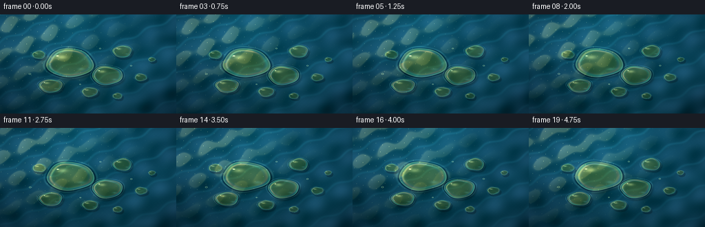
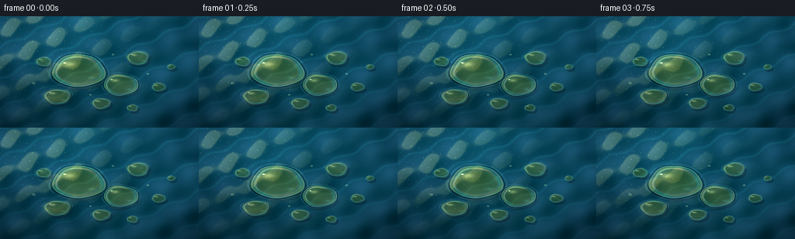

CODING AGENTS AS PIXEL WORLD MODELS
traex/GPT-5.6-Sol · phygen_077
点击播放 · 原生 RGB 像素
逐轮保存的候选
回放视频、检查图与代码变化。
每份候选均可单独播放。实际图片检查记录在下方工具轨迹中。
候选 01播放与检查图
点击播放 · 原生 RGB 像素


展开代码变化
--- 上一保存版本
+++ 本次保存版本
@@ -0,0 +1,235 @@
+"""Procedurally render sunlight on oil droplets floating on rippled water.
+
+The scene is synthesized entirely with numpy geometry and PIL resampling. It
+uses a three-times larger working canvas so that the droplet rims, tiny solar
+glints, and interference colors remain smooth at the requested resolution.
+"""
+from pathlib import Path
+
+import cv2
+import numpy as np
+from PIL import Image, ImageFilter
+
+import artifact_io
+
+
+CASE_DIR = Path(__file__).resolve().parent
+W, H, N, FPS = 256, 144, 20, 4.0
+SS = 3
+WW, HH = W * SS, H * SS
+
+yy, xx = np.mgrid[0:HH, 0:WW].astype(np.float32)
+X, Y = xx / SS, yy / SS
+
+
+def saturate(a):
+ return np.clip(a, 0.0, 1.0)
+
+
+def smoother(a):
+ a = saturate(a)
+ return a * a * (3.0 - 2.0 * a)
+
+
+def water_surface(t):
+ """Deep blue water with moving capillary waves and broken sun reflections."""
+ # Several nonparallel travelling wave families give the surface a natural,
+ # non-repeating directional texture. Their derivatives act as a normal map.
+ p1 = .072 * X + .157 * Y - 1.34 * t
+ p2 = -.117 * X + .081 * Y + .93 * t
+ p3 = .204 * X + .037 * Y - 1.78 * t
+ p4 = .031 * X - .243 * Y + 1.18 * t
+ p5 = .013 * X + .058 * Y - .37 * t
+
+ wave = (2.1 * np.sin(p1) + 1.4 * np.sin(p2 + .55 * np.sin(p5))
+ + .72 * np.sin(p3) + .52 * np.sin(p4))
+ gx = (2.1 * .072 * np.cos(p1) - 1.4 * .117 * np.cos(p2 + .55*np.sin(p5))
+ + .72 * .204 * np.cos(p3) + .52 * .031 * np.cos(p4))
+ gy = (2.1 * .157 * np.cos(p1) + 1.4 * (.081 + .55*.058*np.cos(p5))
+ * np.cos(p2 + .55*np.sin(p5)) + .72 * .037 * np.cos(p3)
+ - .52 * .243 * np.cos(p4))
+
+ # Sky-blue near the top, deep turquoise toward the lower corners.
+ vertical = Y / H
+ lateral = np.abs(X - 118.0) / 150.0
+ base = np.empty((HH, WW, 3), np.float32)
+ base[..., 0] = 7 + 7 * (1 - vertical) + 3 * wave
+ base[..., 1] = 57 + 31 * (1 - vertical) - 9 * lateral + 3.4 * wave
+ base[..., 2] = 75 + 39 * (1 - vertical) - 8 * lateral + 4.8 * wave
+
+ # Low-frequency sky reflections travel more slowly than the capillary wavelets.
+ cloud = (.5 + .5*np.sin(.019*X + .036*Y - .22*t
+ + .8*np.sin(-.026*X + .012*Y + .15*t)))
+ cloud = smoother((cloud - .40) / .48)
+ base += cloud[..., None] * np.array([4.0, 10.0, 12.0], np.float32)
+
+ # Grazing warm sunlight enters from the upper left. The gradient response
+ # produces narrow, moving ridges instead of simply painting static stripes.
+ sun_response = saturate(.54 - 1.85*gx - 1.12*gy)
+ sun_response = sun_response**7
+ sun_falloff = np.exp(-((X-34.0)/105.0)**2 - ((Y-20.0)/80.0)**2)
+ base += (sun_response * sun_falloff)[..., None] * np.array([61, 48, 23], np.float32)
+
+ # A field of small, broken glints at intersections of two wave systems.
+ a = np.sin(.305*X + .092*Y - 2.3*t)
+ b = np.sin(-.073*X + .286*Y + 1.4*t)
+ spark = np.exp(-(a/.082)**2 - (b/.155)**2)
+ spark *= np.exp(-((X-39)/125)**2 - ((Y-25)/90)**2)
+ spark *= .35 + .65*saturate(.65 - gx - .45*gy)
+ base += spark[..., None] * np.array([175, 145, 75], np.float32)
+
+ # Long, faint wave crests imply a continuous sheet of water.
+ crest = np.maximum(0, np.cos(p1 + .45*np.sin(p2)))**22
+ crest *= .35 + .65*(1-vertical)
+ base += crest[..., None] * np.array([7, 18, 20], np.float32)
+
+ # Fine deterministic texture prevents large areas from looking synthetic.
+ grain = np.sin(X*2.17 + Y*1.31 + t*1.9) * np.sin(X*.91 - Y*2.43 - t*.7)
+ base += grain[..., None] * np.array([.7, 1.1, 1.2], np.float32)
+
+ # Cinematic edge falloff, mild enough to retain water detail.
+ vignette = 1.0 - .20*saturate(((X-W/2)/(W*.72))**2 + ((Y-H/2)/(H*.72))**2)
+ base *= vignette[..., None]
+ return np.clip(base, 0, 255)
+
+
+# center x/y, semi-width/height, phase, optical density. The broad spread of
+# sizes reads as a naturally scattered group rather than a regular pattern.
+DROPS = [
+ (101, 70, 34, 21, .3, 1.00),
+ (155, 88, 22, 14, 1.8, .88),
+ (73, 103, 17, 10, 3.1, .78),
+ (177, 53, 14, 9, 4.0, .72),
+ (130, 112, 12, 7, 2.4, .65),
+ (56, 58, 10, 6, 5.2, .62),
+ (204, 91, 9, 5.5, 1.2, .58),
+ (170, 118, 7, 4.5, 4.7, .52),
+ (220, 65, 5.2, 3.4, 2.0, .48),
+]
+
+
+def drop_geometry(desc, t, index, shifted=False):
+ cx, cy, rx, ry, phase, density = desc
+ # Shared drift follows the water, while minute independent motion keeps the
+ # group from looking stamped on the background.
+ cx += .65*np.sin(.52*t + .4) + .18*np.sin(.81*t + index)
+ cy += .38*np.cos(.47*t + .1) + .13*np.sin(.67*t + index*.7)
+ if shifted:
+ cx += 2.0 + .35*density
+ cy += 2.7 + .35*density
+ lx = (X-cx)/rx
+ ly = (Y-cy)/ry
+ ang = np.arctan2(ly, lx)
+ rad = np.sqrt(lx*lx + ly*ly)
+ # Slowly flexing lobes are characteristic of fluid, surface-bound droplets.
+ boundary = (1.0 + .036*np.sin(3*ang + phase + .28*t)
+ + .020*np.sin(5*ang - phase*.7 - .19*t)
+ + .010*np.sin(2*ang + .42*t + index))
+ return rad / boundary, lx, ly, ang, cx, cy, rx, ry, density
+
+
+def add_menisci_and_shadows(img, t):
+ """Water displacement and soft contact shadows, painted below every drop."""
+ out = img.copy()
+ for i, desc in enumerate(DROPS):
+ q, lx, ly, ang, cx, cy, rx, ry, density = drop_geometry(desc, t, i)
+ # Concentric depression/meniscus just outside the oil edge.
+ outer = np.exp(-((q-1.105)/.043)**2)
+ inner = np.exp(-((q-1.035)/.025)**2)
+ broken = .76 + .24*np.sin(7*ang + i + .65*t)
+ out += (outer*broken)[..., None] * np.array([22, 32, 29], np.float32)
+ out -= inner[..., None] * np.array([7, 14, 14], np.float32)
+
+ # Recessed shadow is offset away from the sun and softened by the water.
+ qs, *_ = drop_geometry(desc, t, i, shifted=True)
+ shadow = smoother((1.18-qs)/.27) * (.19 + .08*density)
+ out *= (1.0-shadow[..., None])
+ return np.clip(out, 0, 255)
+
+
+def composite_drop(canvas, source_water, desc, t, index):
+ q, lx, ly, ang, cx, cy, rx, ry, density = drop_geometry(desc, t, index)
+ mask = smoother((1.018-q)/.036)
+ inside = q < 1.03
+ h = np.sqrt(np.clip(1.0-q*q, 0, 1))
+
+ # The convex oil lens magnifies and offsets the moving wave texture beneath it.
+ lens_scale = 1.0 + .12*h*density
+ map_x = ((cx + (X-cx)*lens_scale + .55*h) * SS).astype(np.float32)
+ map_y = ((cy + (Y-cy)*lens_scale + .22*h) * SS).astype(np.float32)
+ refr = cv2.remap(source_water.astype(np.float32), map_x, map_y,
+ interpolation=cv2.INTER_LINEAR, borderMode=cv2.BORDER_REFLECT_101)
+
+ # Transparent honey tint: strongest through the thick center, blue water is
+ # still clearly visible below it.
+ obj = refr * (np.array([1.08, .96, .68], np.float32)[None, None, :])
+ obj += (h*density)[..., None] * np.array([41, 28, 2], np.float32)
+ obj += ((-.16*lx - .11*ly)*h)[..., None] * np.array([30, 25, 12], np.float32)
+
+ # Fresnel reflection and a thin dark contact edge establish the volume.
+ fresnel = saturate(q)**7
+ obj += fresnel[..., None] * np.array([67, 78, 66], np.float32)
+ dark_rim = np.exp(-((q-.93)/.047)**2)
+ obj -= dark_rim[..., None] * np.array([27, 21, 13], np.float32)
+
+ # Subtle thin-film color around the perimeter. It is deliberately subordinate
+ # to the golden body color but separates oil from plain water bubbles.
+ film = smoother((q-.66)/.22) * smoother((1.015-q)/.10)
+ ir1 = np.sin(20*q + 2.4*ang + .95*t + index)
+ ir2 = np.sin(17*q - 3.0*ang - .61*t + index*.8)
+ obj[..., 0] += film*(15*ir1 + 5)
+ obj[..., 1] += film*(10*ir2 + 5)
+ obj[..., 2] += film*(-10*ir1 + 13)
+
+ # Broad reflected sky patch plus a pin-sharp solar point on the upper-left
+ # shoulder. Their locations scale naturally with each droplet.
+ broad = np.exp(-(((lx+.34)/.31)**2 + ((ly+.40)/.20)**2)*2.0)
+ hard = np.exp(-(((lx+.53)/.075)**2 + ((ly+.49)/.055)**2)*2.4)
+ crescent = np.exp(-((q-.84)/.045)**2) * smoother((-lx-ly+.12)/.7)
+ glint_flutter = .86 + .14*np.sin(2.3*t + index*.9)
+ obj += broad[..., None] * np.array([76, 69, 43], np.float32)
+ obj += (hard*glint_flutter)[..., None] * np.array([225, 211, 151], np.float32)
+ obj += crescent[..., None] * np.array([50, 46, 27], np.float32)
+
+ # A dim opposite-side reflection makes the cap feel glossy rather than flat.
+ bounce = np.exp(-(((lx-.49)/.22)**2 + ((ly-.42)/.13)**2)*2.0)
+ obj += bounce[..., None] * np.array([14, 25, 28], np.float32)
+ obj = np.clip(obj, 0, 255)
+ return canvas*(1-mask[..., None]) + obj*mask[..., None]
+
+
+def render_frame(frame_index):
+ t = frame_index / FPS
+ water = water_surface(t)
+ scene = add_menisci_and_shadows(water, t)
+ # Back-to-front order is mostly immaterial (the droplets do not overlap), but
+ # sorting by vertical position preserves a coherent shallow perspective.
+ order = sorted(range(len(DROPS)), key=lambda i: DROPS[i][1])
+ for i in order:
+ scene = composite_drop(scene, water, DROPS[i], t, i)
+
+ # A few nearly microscopic oil beads extend the cluster without visual noise.
+ for j, (cx, cy, r) in enumerate(((43, 86, 1.5), (190, 74, 1.25),
+ (145, 49, 1.15), (116, 101, .95))):
+ driftx = .65*np.sin(.52*t+.4)
+ drifty = .38*np.cos(.47*t+.1)
+ d = np.sqrt((X-cx-driftx)**2 + ((Y-cy-drifty)*1.45)**2)
+ ring = np.exp(-((d-r)/.38)**2)
+ core = np.exp(-(d/(r*.7))**4)
+ scene += ring[..., None]*np.array([94, 91, 55], np.float32)
+ scene += core[..., None]*np.array([18, 11, -2], np.float32)
+
+ scene = np.clip(scene, 0, 255).astype(np.uint8)
+ im = Image.fromarray(scene, "RGB").resize((W, H), Image.Resampling.LANCZOS)
+ im = im.filter(ImageFilter.UnsharpMask(radius=.65, percent=45, threshold=3))
+ return np.asarray(im, dtype=np.uint8)
+
+
+def main():
+ frames = np.stack([render_frame(i) for i in range(N)], axis=0)
+ artifact_io.save(frames, CASE_DIR)
+ print(f"saved {len(frames)} RGB frames: {frames.shape}, {frames.dtype}")
+
+
+if __name__ == "__main__":
+ main()
可观测工具轨迹
实际执行的命令与返回图片。
命令 1exit 0
/bin/bash -lc "cat prompt.txt && printf '\\n--- GENERATION_RULES.md ---\\n' && cat GENERATION_RULES.md"
命令 2exit 0
/bin/bash -lc "cat task_spec.json && printf '\\n--- FILES ---\\n' && find . -maxdepth 2 -type f -printf '%p %s bytes\\n' | sort"
命令 3exit 0
/bin/bash -lc "command -v ffmpeg; command -v blender; command -v python3; python3 - <<'PY' mods=['numpy','PIL','cv2','imageio','scipy'] for m in mods: try: x=__import__(m); print(m,'OK',getattr(x,'__version__','')) except Exception as e: print(m,'NO',e) PY"
命令 4exit 0
/bin/bash -lc 'cat artifact_io.py'
命令 5exit 0
/bin/bash -lc 'python3 generate.py'
命令 6exit 0
/bin/bash -lc "python3 - <<'PY'
from pathlib import Path
from PIL import Image
import numpy as np
p=Path('.')
files=sorted((p/'frames').glob('*.png'))
a=np.stack([np.asarray(Image.open(f)) for f in files])
print('frames',len(files),a.shape,a.dtype)
print('range',a.min(),a.max(),'mean RGB',a.mean((0,1,2)).round(2))
print('sat black/white',np.mean(a==0),np.mean(a==255))
d=np.abs(np.diff(a.astype(np.int16),axis=0))
print('temporal MAD mean/min/max',d.mean(),d.mean((1,2,3)).min(),d.mean((1,2,3)).max())
print('changed pixels mean',np.mean(np.any(d>2,axis=3)))
z=np.load('pixels.npz')['pixels']
print('pixels.npz',z.shape,z.dtype)
for x in ['index.html','inspection.png','transition_check.png','pixels.npz','generate.py']:
q=p/x; print(x,q.stat().st_size)
PY"命令 7exit 0
/bin/bash -lc 'python3 -m py_compile generate.py && git status --short 2>/dev/null || true'
保存候选 1 份；完成命令 7 次；可验证图片返回 0 张。原始 API 响应与完整日志保留在本地。